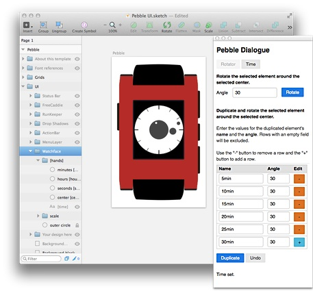
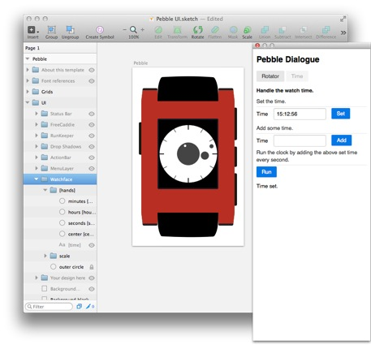

The Sketch 3 plugin "pebble-dialogue"
The Sketch "pebble-dialogue" plugin offers tools to work with layer rotation and with time settings. The values for the different operations are entered in a dialogue which contains forms on two switchable "pages".
The dialogue can be opened from the Sketch menu "Plugins > pebble-dialogue > open-panel". The buttons in the dialogue are shown when the WebSocket server is running. (Start the Websocket Server)
Rotation

To support the work with object rotation for clock faces the plugin dialogue offers to set an angle and rotate 1 layer around another layer (the center).
To support the creation of the periphery sections of the clock dial the dialogue offers to copy and rotate a layer around another layer (the center). In a field list the name of each copied layer and the rotation angle can be set. With the "Duplicate" button all defined duplicates are created in a sequence.
Rotate the minute hand
To change the position of the minute hand for example select the layer "minutes [minutehand]" and the layer "center [center]" in the Sketch file. The minute hand will be rotated around the center. Then enter the rotation angle in the dialogue and click on the "Rotate" button.
Duplicate the periphery marks
To duplicate the 5 minute marks of the clock dial select the layer with the first mark at 12 o'clock and the layer "center [center]" in the Sketch file. Then enter the name and the rotation angle for each copied and rotated mark in the dialogue. To change the number of copies the value rows in the dialogue can be removed or added as needed - click on the "+" button to add rows and on the "-" button to remove rows. Rows with an empty field will also be excluded in the process.
Time

During the work on clock faces it is important to see the hands for different times. In the plugin dialogue the time can be set. Or a specified time can be added to the displayed time. With a click on the "Run" button the clock time changes every second - the time value set in the "Add some time" field is added to the actual time. The hands move in the Sketch layout.
Set the time
To set the time in the "Pebble UI" template select the "[hands]" layer group, enter the time in the dialogue and click on the "Set" button.
How to install the plugin "pebble-dialogue"
Download the PebbleUI-Sketch repository from GitHub and copy the "pebble-dialogue" and the "lib" folder from the repository folder "Sketch-plugins" into the Sketch plugins folder on the computer. To open the Sketch 3 plugins folder on the computer use the Sketch menu "Plugins > Reveal plugins folder...".